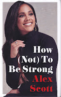
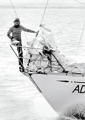
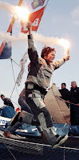
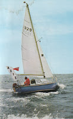

.jpg){kind=link}
I’m assuming that she doesn’t really want to hear what a
slog the endnotes were or how frustrating it is to try to get permissions from
publishing houses that were active 50 years ago but have since been taken over,
amalgamated, gobbled up by the big multinationals who scarcely seem to know
what companies they own, let alone what books might once have been on their
list. She might like to know what a privilege it has been to receive help from absolute heroines of the sailing world -- Tracy
Edwards, Naomi James, Nicolette Milnes-Walker, -- and generally from everyone,
female or male, who I asked about the project. In my acknowledgements I say
truthfully that I have never written such a collaborative book. Even some of
the yacht clubs who have historically been thoroughly stuffy (if not downright
misogynistic) about including women, have shown me general goodwill. (I fear,
however, it’ll take several more years before I manage to saunter through some of those main entrances as to the manor born.)
I think Catherine is asking how writing this book has changed
me. A few more lines on the forehead, a further clouding of the eyesight, an
additional stoop to the back or some fizzy new bifurcations along the synapses?
 |
| Alex Scott writes about determination and courage. |
{kind=link}
Through the centuries people of both sexes have taken it on themselves to tell women what is and isn’t ‘suitable’ for us. A Harley Street doctor (female) described 1920s football as a “too much for a women’s physical frame”. Historically the care and protections afforded to women – which so quickly turn into restrictions and repressions – are extended because we are often (but not always) smaller, sometimes less muscular (particularly if we’ve been denied equal opportunities for sport and exercise) and because we have the (not invariable) potential to bear children. Historically we have less money and less autonomy.
I fell in love with 1880s Solent racer Barbara Hughes. She had no money to buy a boat of her own. She could only race in boats that had been bought by men -- her father, her brothers, her brother-in-law, other wealthy men who knew she could win trophies for them. Barbara wrote:
To enjoy racing to the full, you should have it all in your own hands, with no one to say you ‘nay’, otherwise that spirit of independence – so rarely enjoyed by our sex – is lost. The sensation of being master of your own vessel, with the helm in your hand and a willing crew to do your commands unquestionably, these are elements that should be experienced to be enjoyed.
 |
| Clare Francis, skippering a team around the world |
.jpg){kind=link}
The idea that the mainspring of a talented woman’s achievements is a desire to get even with men or even to beat them into the ground is a demeaning notion put about by the popular press with their love of out-of-date clichés. (Clare Francis)
I sailed for myself for my own particular reasons which had nothing whatsoever to do with women’s lib. (Naomi James)
Their basic demand was for the freedom to pick their own challenges and achieve their personal potential. It's an understandable feeling that it’s hard enough battling for the right to follow one’s own inclinations without the additional burden of representing a Cause. In the 1970s there was so much mockery and anger engendered by the phrase ‘women’s libber’, it would have taken more energy to counter -- energy that might be better used raising essential sponsorship or planning for the challenge itself. I don’t know whether Barbara Hughes in the 1880s identified with the ‘New Woman’ movement, or whether she simply focussed on where her next race was coming from. I'm guessing it was the latter.
These days, however, Naomi thinks she was wrong not to identify more explicitly with the Women’s Movement
I realise now that back then I was trying to separate myself from the male/female stereotypes that didn’t seem relevant to me. Now, I see feminism as one of the ongoing battles for equality which is very relevant to us all.
Perhaps the extent of radicalisation also depends how much opposition is encountered. Tracy Edwards, a decade younger than Claire or Naomi, encountered harsher opposition, more personal attacks and remains angry to this day. Her field of battle has widened from the personal, though the political to the existential. Every time I read of yet another violent attack on a woman by a man, or another curtailment of a woman’s right to be educated, follow a career or even chose her own clothing style, I think of Tracy. Not just for her sailing skill but for her passion and her determination to make change. Ellen MacArthur, arguably the most vivid star of all, has since left sailing as she campaigns for sustainability and the conservation of global resources.
 |
| Ellen MacArthur, now campaigns for sustainability |
.jpg){kind=link}
I have needed to think quite deeply about the extent that my own perspective has been shaped by being born mid-c20th and growing up a baby-boomer. While I have been writing this book I have been watching my daughter become a 21st century mother and Tracy's yacht Maiden race round the world again with a young, ethnically diverse female crew. But if Catherine Larner were to press me now for a single ‘takeaway’ now I would be thinking of Naomi James, up the mast, fifty miles from Cape Horn, utterly alone, struggling for two hours to free a jammed nut.
I had said to myself “you’ll just have to get the damn thing off!” and finally using brute strength I didn’t know I had, the nut started to yield. My background provided me with the will to persevere, and it was the knowledge that it was up to me alone to free the nut that provided the strength.
 |
| N M-W setting out across the Atlantic |
{kind=link}
That may not feel like very much to show for two years research, many fascinating conversations and 120,000 words. There’s hinge moment between being in a book, thinking about it, writing it, reflecting on it – and then being able to explain it. Catherine promises that we can go sit on a bench by the river while I try to make that final shift. Perhaps I won't mention that one of the women I admire the most is Nicolette Milnes-Walker, the first woman to sail alone across the Atlantic without stopping. Nicolette says she feels no need to talk about her achievement any more. She's done it, written about it and it stays with her. That's enough
I’m writing
this on International Women’s Day but I’m aware it will be published on the National
Covid-19 Day of Reflection, which is tomorrow. Last month’s blog https://authorselectric.blogspot.com/2025/02/for-what-little-time-there-might-be.html elicited the comment from
Katherine Roberts that her experience in the pandemic was too raw even to be
written about. She speaks for very many people. People sometimes say
that what we went through 2020-2022 was something like a war and it’s a truism
that the most deeply felt books about a war are unlikely to be published until
a decade later. I hope I’ll be around to
read whatever Katherine writes sometime in the early 2030s.